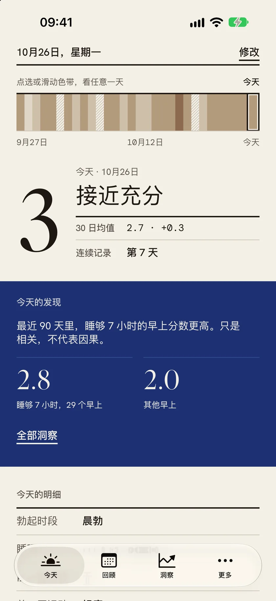
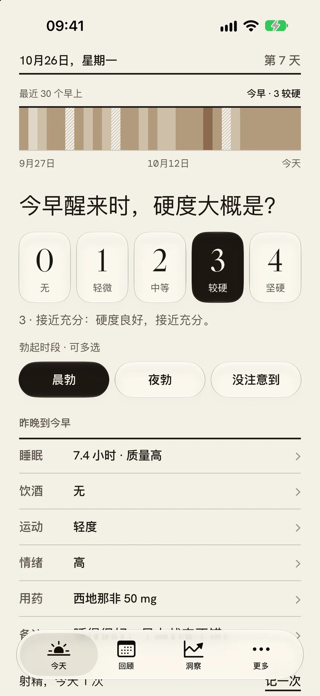
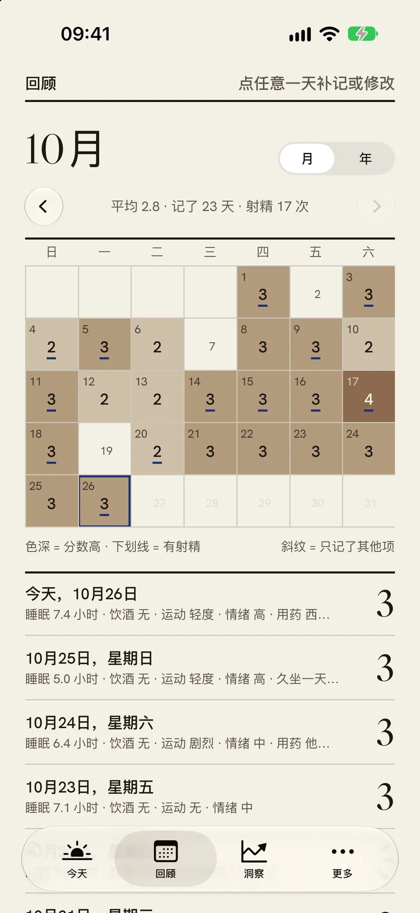
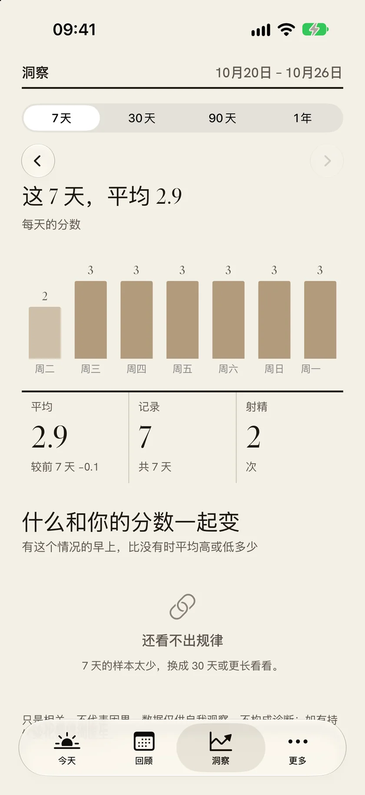
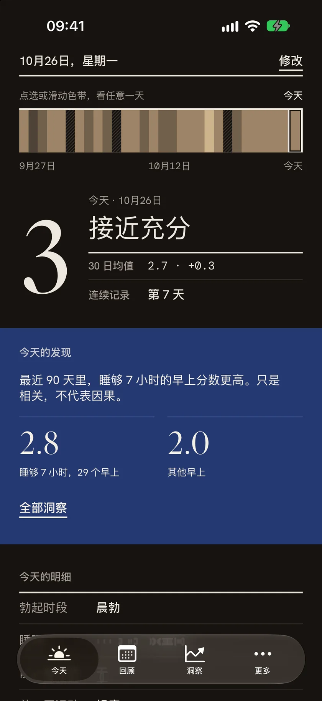

朝雾 · A QUIET MORNING HEALTH JOURNAL
每天 10 秒，
记下今早的状态。
硬度、睡眠、情绪、用药——只记几行会变的东西。剩下的交给一条色带：三十个早上、一年，和那些慢慢显出来的规律。
只存在本机
FACE ID 上锁
不做追踪

01 / 早上
10 秒，记下今早。
五格硬度，点一格就好；勃起时段、睡眠、饮酒、运动、情绪、用药，每一行点开就能改，行尾直接显示这一行记了什么。所有内容自动保存，「完成今天的记录」只是收个尾。
- 硬度
- 五格，0 无 → 4 坚硬
- 时段
- 晨勃、夜勃、没注意到
- 因素
- 睡眠、饮酒、运动、情绪、用药


02 / 回顾
一年，写成一条色带。
月历里，格子的深浅是那天的分数；有射精的日子带一道下划线，只记了别的项是斜纹。点任意一天，补记或修改——今天之前的，也还能改。
- 月历
- 色深 = 分数高
- 年视图
- 一行一个月，一天一道
- 补记
- 过去随时能改
03 / 洞察
它不替你下结论。
把睡眠、饮酒、运动、情绪、用药和你的分数放在一起比，按影响大小排给你。样本不够就直说；每句话都带着「只是相关，不代表因果」。
- 区间
- 7 天、30 天、90 天、1 年
- 比较
- 有这个情况的早上 vs 没有
- 口径
- 每句都标样本天数

今天的发现
「最近 90 天里，睡够 7 小时的早上分数更高。」
紧接着永远是那句：只是相关，不代表因果。数字旁边，也永远有样本天数。
示例 · 演示数据
04 / 隐私
数据只留在你的设备上。
没有账号，没有服务器，默认也不上传。记录只存在这台 iPhone 上；打开 Face ID，别人连 App 都打不开。想备份时，用自己的 iCloud 私有库——只有你能看。
- 存储
- 默认只在本机
- 解锁
- Face ID（可选）
- 追踪
- 不做，隐私清单可查
- 备份
- 自己的 iCloud 私有库

05 / 价格
免费就能用；
完整版，一次买断。
没有订阅，也没有广告。每天要用的打卡、回顾和导出都免费；完整版把洞察、备份和 PDF 报告一次解开。
免费
FREE
- 打卡与回顾
- 今天的发现
- Excel 导出
- Face ID 上锁
完整版
ONE-TIME
¥68
$9.99 · 一次买断
- 完整洞察
- iCloud 备份
- PDF 记录报告
价格以 App Store 显示为准
朝雾 1.0 · App Store 即将上架
[ 商店链接占位 · 过审后补上 ]